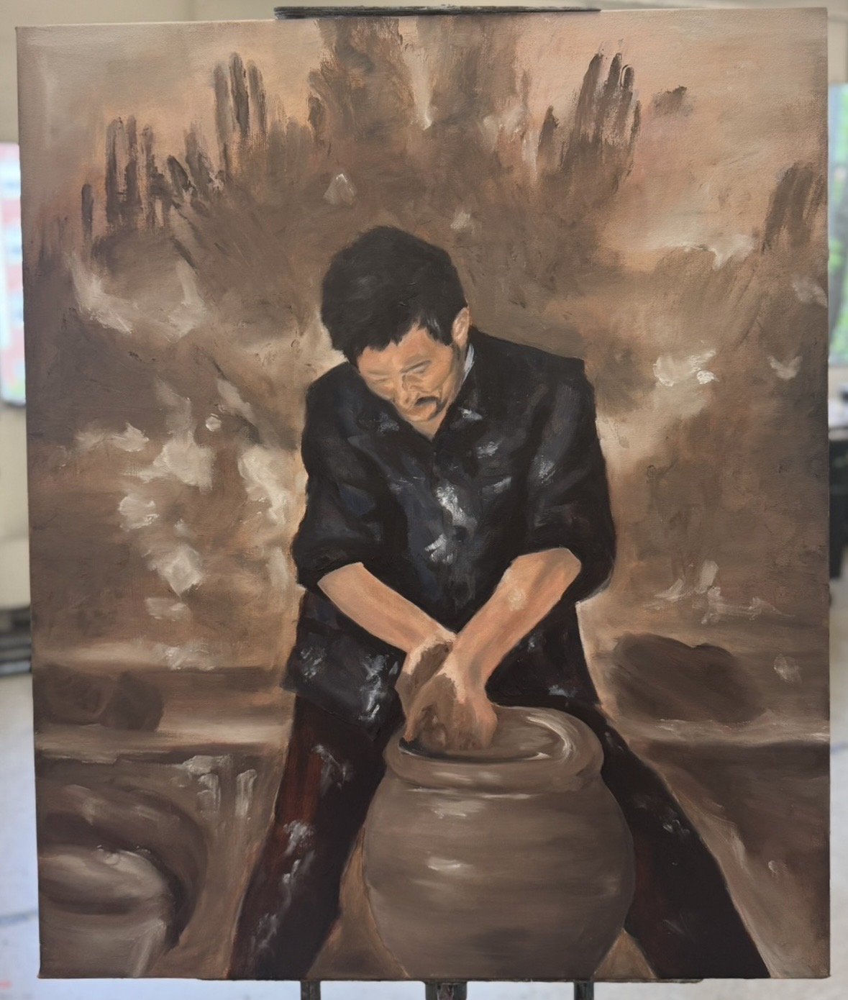
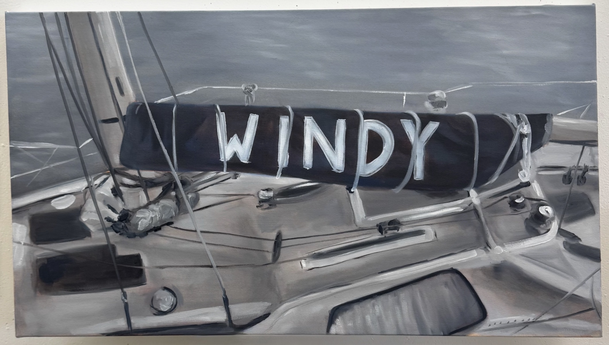
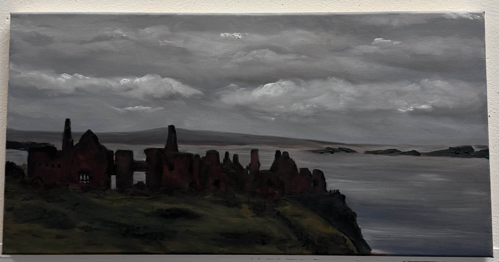
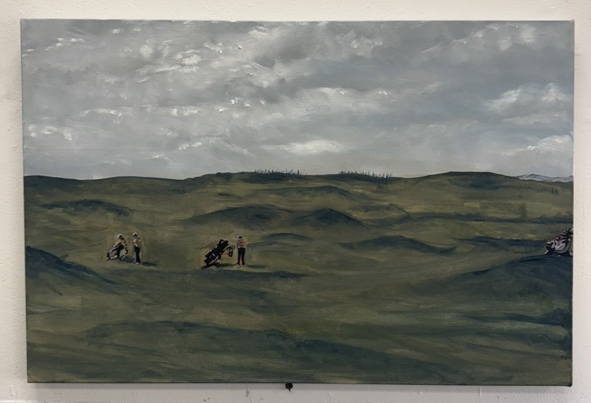
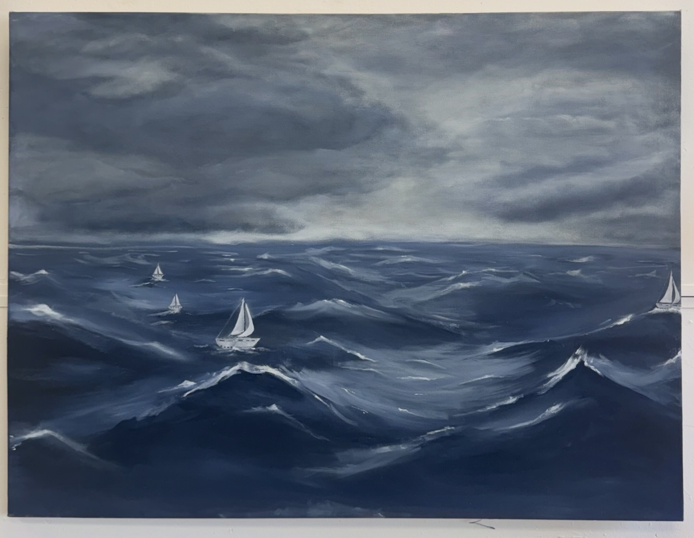

36x30" IN PROGRESS This painting depicts a man shaping a pot from clay, introducing a direct and intimate interaction between human and nature, but where nature is implied. Unlike the other landscapes I have painted, where the human presence is implied, the figure here is fully engaged with a material drawn from the Earth itself. The scene is filled with motion, yet remains controlled, capturing a sense of energy within stillness. This interaction reflects the idea that navigating forces larger than ourselves are not only observational, but it is an active participation that is deeply embodied. There is a balance and negotiation between control and inevitability of humans to nature. The man shapes the clay while simultaneously responding to its limitations. Adaptation is essential.

24x36" This painting focuses on a close view of a small boat tied to a dock, bearing the name Windy. Unlike the open landscapes and distant boats moving across water, this boat is secured in place. The closeness feels more personal, and implies safety and stability. Yet the boat still rests on shifting water that moves beneath it. The name “Windy” itself hints at the unseen forces beyond human control. It is ironic because the name suggests movement and freedom, where the boat itself is docked safely, creating tension between human’s attempts to control surrounding forces.

12X48” This painting explores the relationship between human attempts at permanence and the inevitability to change. This Irish castle represents humanity’s desire for control and stability against the forces of the natural world. Built to appear strong and powerful, the structure now shows signs of erosion…being reclaimed by the surrounding landscape. The quiet presence of nature surrounding the ruin suggests that despite human efforts to resist vulnerability, change is unavoidable, and resilience often comes not from control, but from learning to exist within forces larger than ourselves.

24x30” This painting presents the golf course as a psychological landscape shaped by the uneasy relationship between human control and the unpredictability of nature. The scene appears quiet and slightly dreary, as if rain is about to arrive, creating a heavy atmosphere that lingers over the open space. While golf courses are often seen as carefully designed environments, this one still carries traces of the natural land beneath it. There are uneven hills, no sandpits. In this piece, the course functions as a metaphor for how people navigate spaces they believe they control, while still remaining small within the vastness of the natural world.
40x30” This painting is an abstraction of the song “Baby, I Love Your Way,” by Peter Frampton. Every form in the composition originates from the letterforms of the song’s title. Rather than presenting the text directly, the letters are fragmented, stretched, and layered until they become shapes, gestures, and movement within the painting. Through this process, language shifts from something readable into something felt. A visual experience that is meant to reflect warmth, intimacy, and atmosphere carried within the music. Almost resembling a flower blooming, as a new relationship naturally would.

36x48” This painting presents the ocean as a psychological landscape where the approaching storm becomes a metaphor for human turmoil and resilience. Sailing was once a leisurely activity but it is yet one of the clearest reminders of our dependence on and connection to nature. A suggested storm is near, yet the boats scattered across the surface remain calm and steady. None of them react to the storm that is forming around them. In this way, the scene reflects how people move through hardship. There is not really an outward acknowledgment of what they are facing. The boats represent individuals navigating the same uncertain waters, each carrying their own struggles while continuing forward. We are quite literally in the same boat.